O saco estanque, ou saco impermeável, ou ainda saco estanque impermeável, é muito útil em diversos tipos de aventuras e atividades ao ar livre, pra manter roupas e equipamentos a salvo de chuvas ou do próprio suor. Mas eu não achava nada barato, e por isso sempre guardava minhas coisas dentro de sacos plásticos de mercado comuns, que colocava depois dentro da mochila ou no baú da moto. Assim, não havia risco de molhar o que havia no interior, fossem roupas ou equipamentos eletrônicos.
Mas o problema é que os sacos de mercado estragam rápido, e se for uma viagem longa, esqueça, tem que levar um monte de reserva. Daí resolvi fabricar eu mesmo os sacos impermeáveis e resistentes para usar em viagens. Se apenas um saco estanque de pequeno volume custa em média 40 reais dos mais baratos, gastando menos da metade desse valor eu fiz oito, e sobrou material para mais. Então, faça você mesmo um saco impermeável para viagens!
O acabamento é de acordo com sua paciência e técnica. Como tenho quase nada dessas duas virtudes, me preocupei apenas com que fosse de fato impermeável. Também não achei para comprar na hora os engates plásticos, tipo os utilizados em mochilas, então improvisei com fitas de velcro. O resultado ficou bom, e cumpre o desejado, que é proteger o que está no interior da embalagem. Afinal vai ser levado dentro de mochilas e nem precisa ser bonito mesmo. Só eficiente.
Material para fazer o Saco Estanque Impermeável
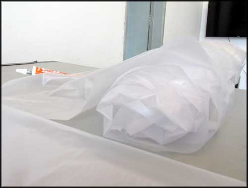O plástico utilizado, escolhi transparente, para facilitar identificar o conteúdo depois. Se tivesse encontrado nylon mais leve, teria comprado cores diferentes para ajudar na organização.
O “plástico” para fazer os sacos impermeáveis comprei no Saara, mercado popular aqui no Rio de Janeiro. Queria ter comprado nylon, mas os poucos que achei em loja física no dia eram bem pesados, e eu queria um material leve. Afinal, o uso dessa vez nem era para levar na moto, mas sim dentro de mochila cargueira em trilhas de longa duração, então cada grama de peso economizada é lucro.
Comprei três metros de um plástico resistente e maleável, que parece do tipo que fazem cortinas de box para chuveiros, do tipo mais leve, e transparente para identificar rapidamente o conteúdo durante a viagem. E é muito resistente. Custou uns 12 reais. Para colar, eu já tinha comprado um tubo de cola vinil (adesivo para PVC flexível) que utilizei para fazer uma bolsa de lona plástica há um tempo atrás. O produto rende muito, já que se usa uma camada fina para soldar os plásticos, e depois que seca, não solta mais. É o mesmo tipo utilizado para remendar colchões infláveis, por exemplo.
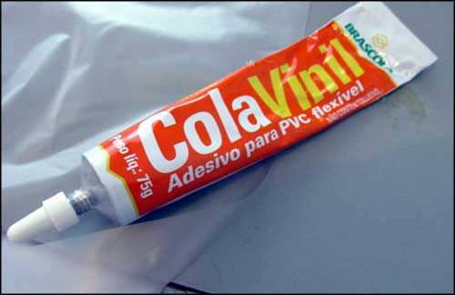A cola vinil, adesivo PVC flexível. Rende bastante.
Para fazer o Saco Estanque Impermeável
Para fazer um saco estanque impermeável, você pode se basear nos produtos já existentes no mercado para melhorar os detalhes, como o formato e tipo de dobras, e é o que eu vou fazer nas próximas vezes, com calma. Existem modelos bastante robustos, apesar de caros, como esse aqui do link. Só que esses eu fiz com um pouco de pressa, em cima da hora de uma viagem com longas trilhas a pé, aonde ficaria exposto a chuva, então fiz no formato mais fácil e rápido possível. E funcionou bem.
Como eu já tinha definido os objetos que queria proteger, os utilizei para tirar medidas e formatos personalizados. Eram três isolantes térmicos de espuma, e três sacos de dormir.
Primeiro recortei nas dimensões que cobririam o objeto quase exatamente, com pouca folga, fechando com cola nas arestas ao longo.
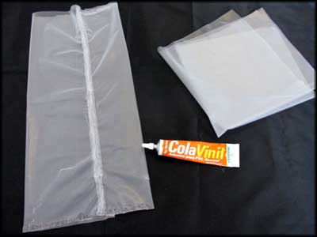Fechamento simples, longitudinal, com a cola PVC.
O plástico que utilizei se enrugava rapidamente com o contato da cola, como se estivesse derretendo, e o tempo de secagem da cola também é rápido. Então o negócio é ajustar a área de contato e não ficar tentando corrigir. No início parecia que não daria certo, mas conforme a cola PVC secava, eu via que estava funcionando bem. Foi fechado na lateral e na base, ganhando um formato achatado mesmo.
Para a borda aberta, por onde se coloca o conteúdo, improvisei com silver tape, colando e criando uma haste mais "rígida". Essa parte que vai servir para enrolar a boca do saco e vedá-lo.
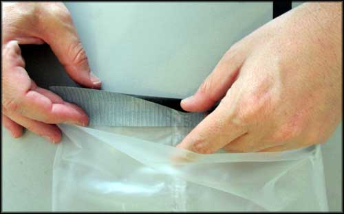Foi utilizado Silver Tape para acabamento da boca do saco estanque.
Com dois pedaços de fita adesiva tipo silver tape, colei a borda nas duas faces, fechando por completo o círculo da boca, fazendo assim uma superfície circular mais sustentável para manobrar e fazer as dobras.
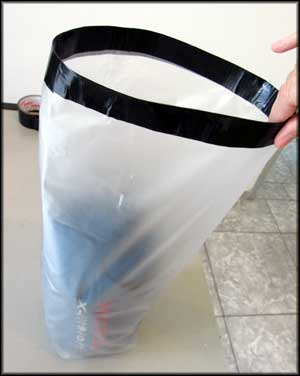Agora com o a borda de silver tape ficava mais fácil dobrar a boca do saco estanque
Para testar se as medidas estavam adequadas, coloquei o saco de dormir no interior, e ficou perfeito, fácil de guardar, mas sem sobrar muito plástico. Compacto e personalizado.
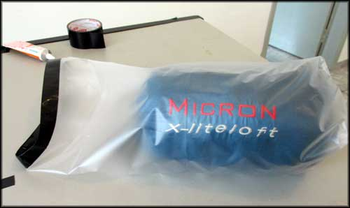O tamanho ficou bom, bem como esperado, adequado ao objeto.
Agora era necessário poder fechar a entrada. O ideal seria colocar uma fita de nylon no lugar da silver tape, e engates plásticos nas pontas. Mas como eu não tinha esse material na hora, improvisei com mais um pedaço de silver tape e um pedaço de fita velcro que eu já tinha de outros projetos.

Fita velcro adesiva para fechar a boca do saco impermeável.
Na hora de colar os pedaços da fita velcro, fixar um pedaço voltado para face oposta ao outro, de forma que, depois de dobrado, se juntem do lado correto.
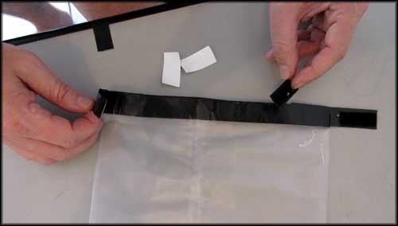Um pedaço de fita velcro de cada lado, voltado para a face oposta um em relação ao outro.
A ideia é que, após enrolar a boca do saco impermeável a partir da borda até próximo ao objeto guardado, haja essa sobra lateral, de forma que os pedaços de velcro se unam, impedindo que desenrole depois.
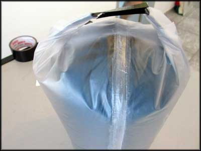Depois de enrolar a boca, os pedaços de velcro colam entre si, impedindo que abra o saco estanque
Para finalizar, como colei no formato inicial fazendo um "saco achatado", uni as pontas inferiores ajustando ao formado do objeto que pretendia proteger, no caso, um saco de dormir.
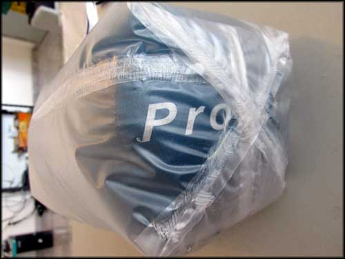Assim ficou o fundo, dobrei as pontas acompanhando o formato do objeto, e fixando com mais um pouco de cola PVC
Pronto. Está acabado o saco estanque impermeável, e o objeto agora vai estar protegido contra chuvas ou qualquer líquido que possa derramar dentro da mochila cargueira ou baú da moto.
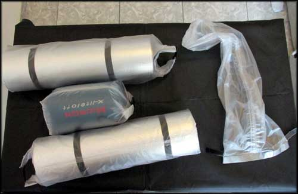Pronto! Na foto, já estão protegidos conta chuvas um saco de dormir e dois isolantes térmicos.
Todos os itens que receberiam a proteção impermeável tinham formato cilíndrico no caso, então virou produção em série. O primeiro demorei quase meia hora pra concluir. Os demais, em dez minutos estavam prontos.

Produção em série, sacos impermeáveis personalizados para cada objeto
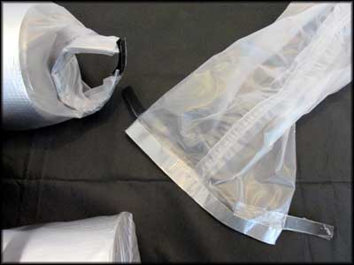Detalhe da boca do saco estanque impermeável, fechado por pedaços de fita velcro
A base do projeto é essa. Muita coisa dá pra melhorar ainda, principalmente um acabamento com mais qualidade visual, mas os sacos impermeáveis foram testados por várias vezes em campo e cumpriram a função.
Testando seu Saco Estanque
Uma coisa a fazer, depois de pronto, é encher o saco estanque com água, para ver se há vazamento. Se não vazar água, então, obviamente, não vai entrar, o que garante que as coisas estarão a salvo das chuvas. Porque é bem ruim não ter roupas secas ao final de um dia de aventura, ou chegar no acampamento com isolante térmico e saco de dormir encharcados. É perrengue na certa, ainda mais em lugares frios.
Fica a dica do faça você mesmo, e quem tiver ideias para melhorar o projeto, comente aí. Boas aventuras!